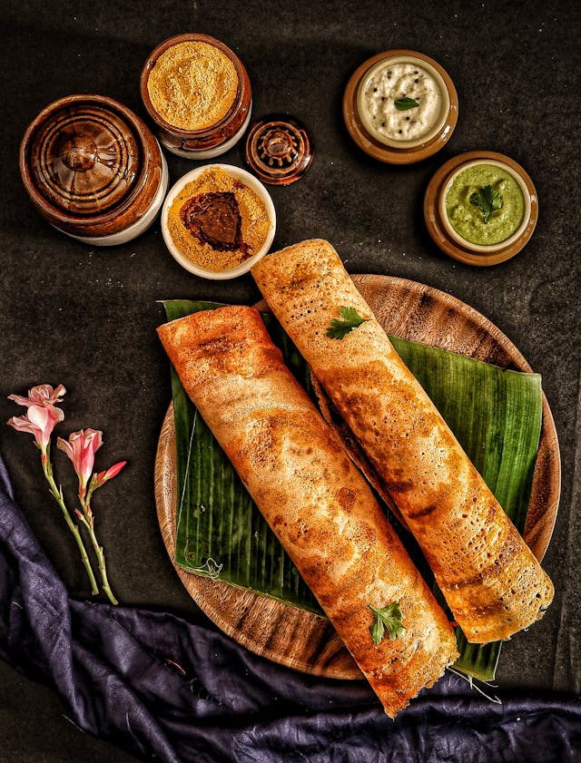

Home
Masala Dosa

One of the most popular south indian recipes that is enjoyed all across India, Masala dosa is a popular South Indian breakfast consisting of a crispy, fermented rice-and-lentil crepe wrapped around a savory, spiced potato filling. Originating from Udupi cuisine, this savory pancake is known for its light texture, golden-brown color, and is typically served hot with coconut chutney and sambar.
Ingredients
-
For Batter
- 3 cup sona masuri rice
- ½ tsp methi / fenugreek seeds
- water, for soaking
- 1 cup urad dal
- 2 tbsp toor dal
- 2 tbsp chana dal
- 1 cup poha / avalakki, rinsed
For Aloo Bhaji
- 2 tbsp oil
- 1 tsp mustard
- 1 tsp urad dal
- 1 tsp chana dal
- 1 dried red chilli
- few curry leaves
- pinch hing / asafoetida
- 2 chilli, finely chopped
- 1 inch ginger, finely chopped
- 1 onion, sliced
- ¼ tsp turmeric
- 1 tsp salt
- 3 potato, boiled & mashed
- 2 tbsp coriander, finely chopped
- 2 tbsp lemon juice
Steps
Masala Dosa Batter Preparation:
- Firstly, in a large bowl take 3 cup sona masuri rice and ½ tsp methi.
- Rinse well and soak in enough water for 4 hours.
- In another bowl take 1 cup urad dal, 2 tbsp toor dal and 2 tbsp chana dal.
- Rinse well and soak in enough water for 2 hours.
- After soaking dal for 2 hours, drain off the water and transfer to the grinder.
- Add water as required and blend to smooth paste.
- Transfer the batter to a large vessel and let it sit for 40 minutes.
- In the same grinder add soaked rice and 1 cup rinsed poha.
- Add water slowly. Blend to a coarse paste.
- Transfer the rice batter to the same urad dal batter.
- Ferment in a warm place for at least 8 hours or until the batter doubles in volume. If you are living in a cold place, then you can place the batter in a warm oven (just heat the oven until it turns slightly warm and then turn it off) to ferment.
- Once the batter is well fermented, mix gently, without disturbing the air pockets.
- Transfer 4 cups of fermented batter to a small bowl and add 1 tsp salt.
- Mix well until the salt is well combined. masala dosa batter is ready. keep aside.
Aloo Bhaji Preparation
- Firstly, in a large wok heat 2 tbsp oil and add 1 tsp mustard, 1 tsp urad dal, 1 tsp chana dal, 1 dried red chilli, few curry leaves, a pinch of asafoetida.
- Now add 2 chilli and 1 inch ginger. Sauté well.
- Also, add 1 onion and sauté until onions shrink slightly.
- Further, add ¼ tsp turmeric and 1 tsp salt. saute well.
- Now add 3 potato and mix well, mash slightly making sure everything is well combined.
- Turn off the flame and add 2 tbsp coriander and 2 tbsp lemon juice
- Mix well and your aloo bhaji for masala dosa is prepped.
Masala Dosa Preparation
- Firstly, add a ladleful of the masala dosa batter we have prepared on a heated pan.
- Spread as thin as possible making a crispy dosa.
- Take 1 tsp of butter and spread uniformly.
- Also, place 2 tbsp of the prepared aloo masala in the centre.
- Roast until the dosa turns golden brown and crisp.
- Scrape the sides of dosa and roll the dosa.
Our delicious masala dosa is ready to be served with coconut chutney and sambar.